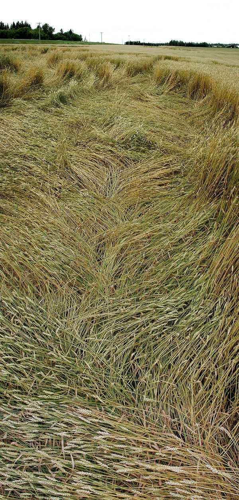

Alberta, Canada , posté en
Lodged (randomly downed) grain in the Edmonton area has a few similarities with the downed grain in crop circle formations. Although not organized in circles, there are repeating internal patterns. Stem node damage is similar to that found in some crop circle formations.
The photos in this report were taken in a wheat field south of Beaumont. This instance of lodging occurred during the period of rapid growth when the seed heads were filling out. The farmer, Andre Goudreau, says the crop goes down every year in this field in the same place. With his permission my husband, Mike Arndt, and I took photos and collected some plant and soil samples.
We also took a look at lodged grain in numerous other fields in areas around of Edmonton--Devon, Leduc, Wetaskawin, Morinville. We found two kinds of lodging:
Central Alberta had a late, cool, wet spring which delayed planting. July was wetter than normal with frequent thunderstorms, windstorms and hail. All of these factors can contribute to lodging. However, in the fields we looked at we saw no bruising, breakage or other evidence of hail damage.

The grain fell in repeating patterns. Almost all grain was bent at the top node. The base of the plants fell in one direction and the top sections (from apical node upwards) fell in another. Areas of downed crop that appeared on the surface to have all the grain lying in one direction almost always had the lower internodal sections of stem lying in one direction and the top stem sections lying uniformly at an another angle.
Trying to imagine how this could have happened, we speculated that perhaps the grain was knocked down all in one direction by wind, grew upwards from the top node and then fell a second time from the top node at a different angle from the weight of the seed head. A local farmer disagreed with that theory. He said, "No, it goes down all at once like dominoes. Once it's down, it doesn't come up again."
Sometimes all the right-angling grain would have a degree of about 60 degrees from straight, while the left-angling grain in the same area would be bent at a shallower angle such as 30 degrees.We rarely found grain that was lying straight from base to seed head. The almost universal bending at the top node and the amazing uniformity of the angles made us think everything fell into place at once.
These are my impressions of the sequences that may take down the grain. I'm particularly interested in the fluid dynamics that might create these patterns. Keep in mind that air is a fluid.
My questions are:
Node changes in lodged wheat were typical of the node changes found in crop circle formations. We found bent and elongated nodes as well as many expulsion cavities.
Upon examining the sample stalks, we see that the bulges and expulsion cavities are on the same side of the stalk as the outward bends.
In moist areas where there was extreme node damage, the plants sent up new shoots from the roots, complete with new seed head. It appears that the original plant stems had been too severely damaged by the lodging to transport nutrients to the still-maturing seed heads, so the plant sent out new shoots.
The Alberta Department of Agriculture has on online brochure on the subject: Lodging of Cereal Crops.
The photographs in this report were taken with a Nikon Coolpix 990 digital camera. Most are panoramas made by stitching several shots with Photoshop.
I have chosen to use large images so that the lay patterns can be clearly seen. I apologize to those of you using small monitors or slow internet connections, and thank you for your patience.
If you know of any scientific studies on the internal patterns in lodged crops, please drop me a line at jarndt@cropcirclequest.com.
I encourage other crop circle researchers to look for and document similar patterns in lodged grain that flattens during the peak growing season.